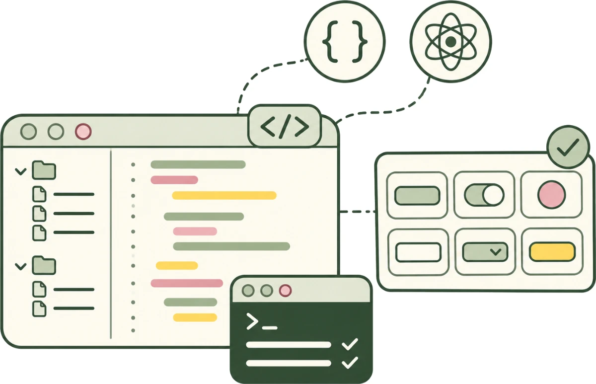

Lab · Agent Review · an AI-assisted design experiment · 5 min read
Agents build the screens. A designer decides what ships.
I had coding agents build the same feature, with design rules and without. Both built it well. Neither could decide which design should ship, and that call was the work.
The question: When AI can build the interface, where does human judgment belong?
How it started
I had Claude Code build the same feature twice, once with twelve design rules and once without. Both built good screens, and the rules made the work complete. Neither could decide whether archiving should ask first or offer undo after.
That question is the rest of this page, and it’s the one thing the two runs showed. The archiving story is simulated, in a made-up app, to show how I’d make the call: a hypothesis, and nobody has tried it yet. The experiment’s full record (opens in a new tab)
So I think the job moves to both ends of the build: upstream, writing the rules the agent builds from, and downstream, deciding whether what it built is good enough. Each call I make there goes back into the rules the next agent inherits.

I built Agent Review myself, in code. It’s a React and TypeScript app with its own design system: 14 components and 317 Storybook stories, each a tested state, checked with axe and Playwright. I worked in the repository with Claude Code, from the terminal. How it’s built
“I archived Birch Logistics by accident while clearing out old trial accounts. It’s one of our biggest accounts. How do I get it back?”
Which fix would you ship?
An agent is rebuilding archiving. As it stands, one press archives all five, and three are active customers. The agent built three fixes.
Review 5 customers before archiving
Can’t archive
Monarch Dental Group: it has an open invoice. It stays in the table.
Active Check these. Clear a box to keep the customer.
- Halvorsen Freight, $3,840 a month
- Brightwater Clinics, $1,320 a month
- Saltmarsh Studio, $87 a month
1 customer churned, past due, or on trial.
Cancel Archive 4 customers
- Halvorsen Freight Active
- Brightwater Clinics Active
- Alder & Finch Trial
- Monarch Dental Group Past due
- Saltmarsh Studio Active
If you review first, the batch stops on a list of the three active customers before anything is archived. It catches the most, but every cleanup takes a second press, even one with nobody active in it.
If you confirm first, every batch gets a pop-up. Someone who archives hundreds of customers a quarter soon clicks through it without reading.
If you archive now, cleanup takes one press, and Halvorsen, Brightwater, and Saltmarsh go with the rest. An Undo bar brings them back, but only if someone notices it in time.
What I chose
I kept the agent’s pick, and made it stop only when it matters
The agent built three directions for archiving. I’d told it safety came first, so it picked a review before every archive. I kept the review, and made it stop only when a batch has an active customer in it.
-
The agent’s pick Review batch, then archive Catches the most, but it’s the slowest.
-
Another direction Confirm first, naming who’s active Warns every time, so people stop reading.
-
Another direction Archive now, undo after Fastest, but someone has to notice the Undo bar.
The agent’s pick Review batch, then archive
The 5 from above stop on a review that names the 3 active customers. So does every cleanup, even one with no one to check.
Review 5 customers before archiving
Can’t archive
Monarch Dental Group: it has an open invoice. It stays in the table.
Active Check these. Clear a box to keep the customer.
- Halvorsen Freight, $3,840 a month
- Brightwater Clinics, $1,320 a month
- Saltmarsh Studio, $87 a month
1 customer churned, past due, or on trial.
Cancel Archive 4 customers
- Halvorsen Freight Active
- Brightwater Clinics Active
- Alder & Finch Trial
- Monarch Dental Group Past due
- Saltmarsh Studio Active
My call Review only when someone’s active
With no one active, 4 customers archive in one press, and Undo brings them back. Only a batch like the 5 opens the review.
- Alder & Finch Trial
- Verity Labs Trial
- Juniper Foods Churned
- Kestrel Aviation Churned
Most of an agent’s work should need nobody
Agent Review sorts every change an agent makes into three kinds, and only two stop for a person.
-
Goes through
Proceeds on its own
The instructions are clear, the change is allowed, and the checks pass. Colors typed in by hand become the system’s named ones.
-
Pauses for a person
Needs judgment
Two answers are both fair, or only a person knows the fact. Is a gray cancel link on a billing screen on purpose?
-
Pauses for a person
Needs approval
The fix reaches past what the agent was given. A new pattern in the design system is its owner’s call.
- SystemThe parts and rules a product is built from
- AgentBuilds the change
- ChangeKept apart until it’s checked
- Automated checksAccessibility, layout, and appearance. Routine work goes through here
- Human judgmentOnly what the checks can’t settle, decided or approved by whoever owns it
- Stronger systemThe next agent inherits it
One support ticket, six stages
It’s a simulation, grown from two real Claude Code runs: you play the designer and take that ticket to what ships. Put safety first at Define, as I did, and the agent recommends the review.
One feature. Six decisions.
I adapted a familiar product design process into six decision points. Five are borrowed from the Double Diamond and human-centered design. Delegate is the one I added: the line between what the agent may decide and what it brings back.
The agent gathers evidence, builds directions, and implements them. The designer sets priorities, weighs trade-offs, and decides what still needs testing. Real work loops back and skips steps, so the six are moments of judgment, not a fixed order.
Discover: Does archiving really delete customer data?
Define: Does speed or safety come first?
Explore: Where does each direction break?
Evaluate: Which direction, and what must it do?
Delegate: What can’t the agent decide alone?
Learn: What’s verified, and what’s still unknown?
Try it, it’s live
Next, I’d put it in front of people
Nothing above has been tested with anyone: the three directions, the three kinds of change, and where the agent stops are my hypotheses. I’d watch four or five designers and product managers try it, and see whether they can do three things.
 Saywhat the designer did at each stage, and what the agent did
Saywhat the designer did at each stage, and what the agent did Tellthe simulated evidence apart from the working software
Tellthe simulated evidence apart from the working software Weighthe three directions, instead of taking “Agent recommends” on trust
Weighthe three directions, instead of taking “Agent recommends” on trust
The research plan (opens in a new tab) says what result would change the design.
How it’s built
- Role
- Product and interaction design, design-system architecture, accessibility, and the build
- Built with
- React, TypeScript, Storybook, Vitest with axe, Playwright, Claude Code
- Size
- 14 components · 317 stories, each a tested state · 12 design rules for the agent · 3 working directions for one feature
- Tests
- Every story rendered and checked with axe; visual baselines; a token lint that fails any value typed in place of a token
See the decision record in Storybook (opens in a new tab) The whole Storybook (opens in a new tab) Source and experiment record (opens in a new tab)
A solo project, begun October 1, 2026. Every commit is mine, co-authored by Claude Code.